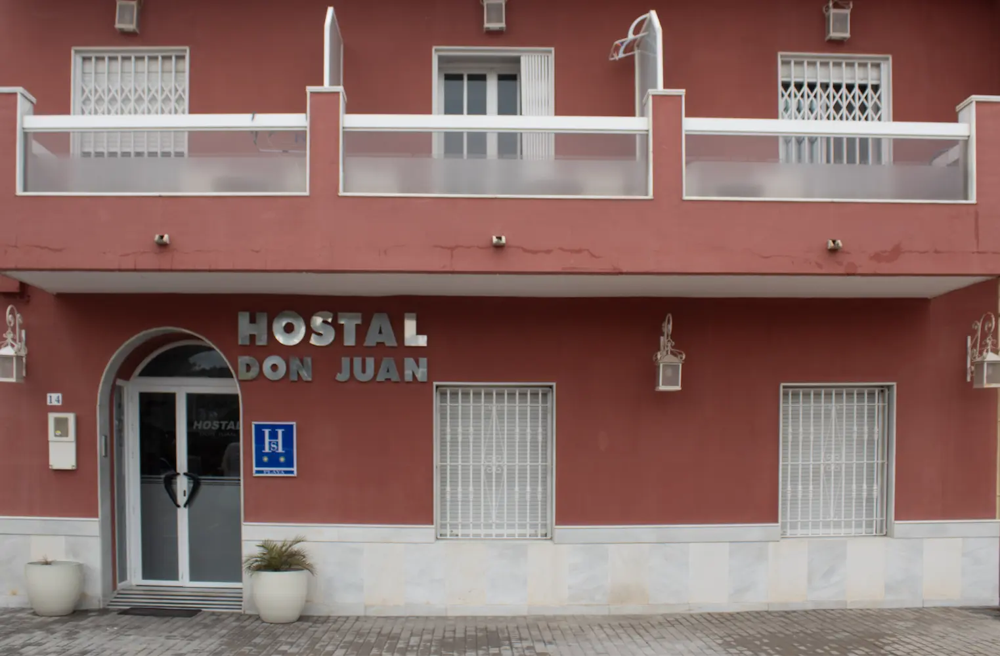
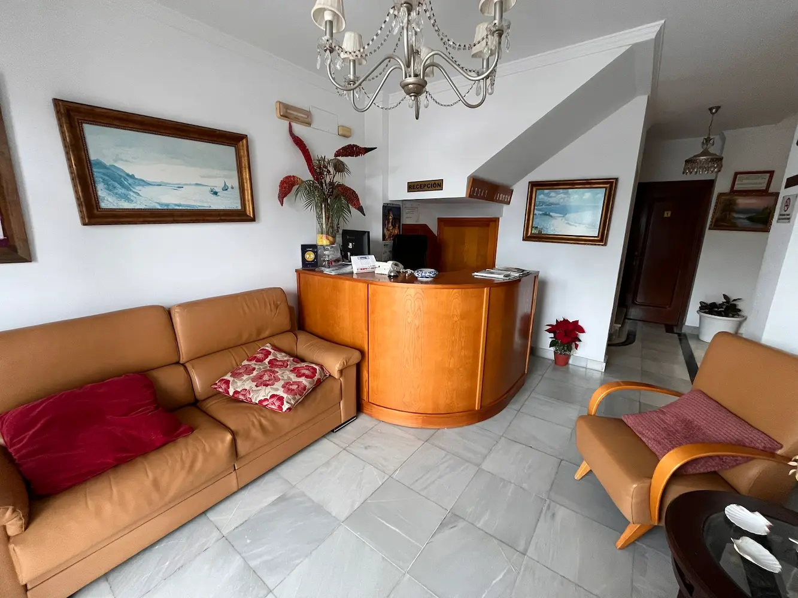
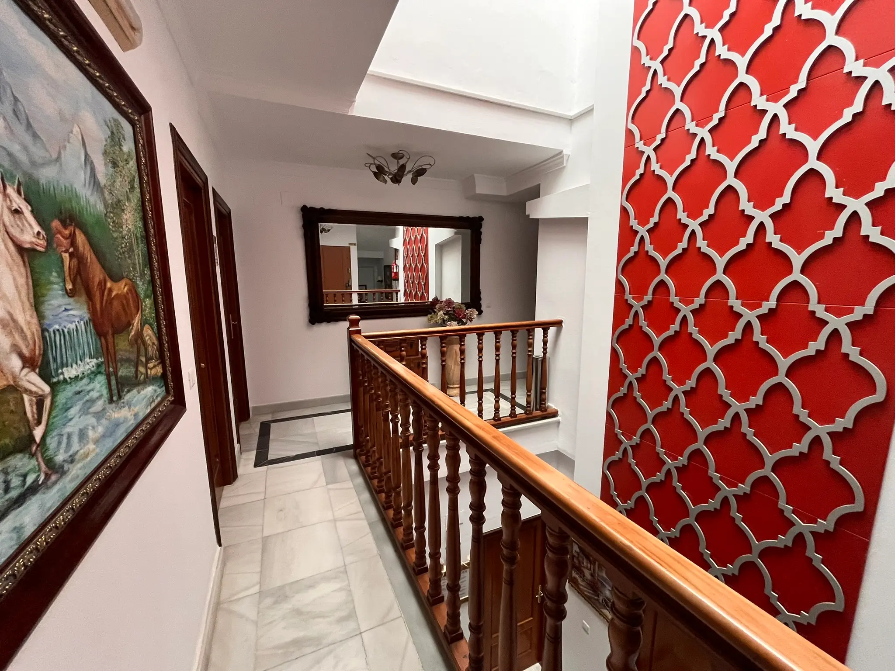
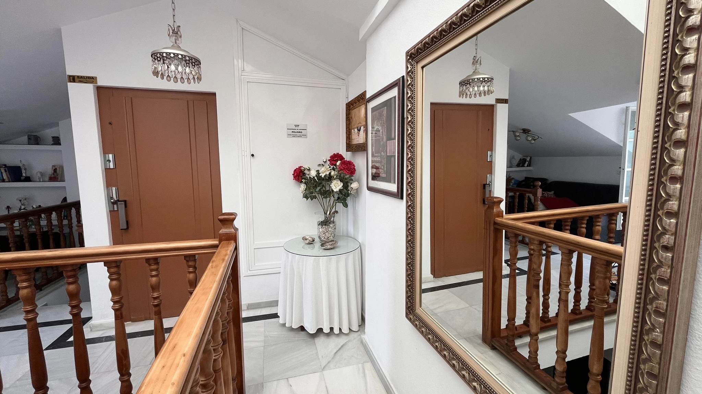
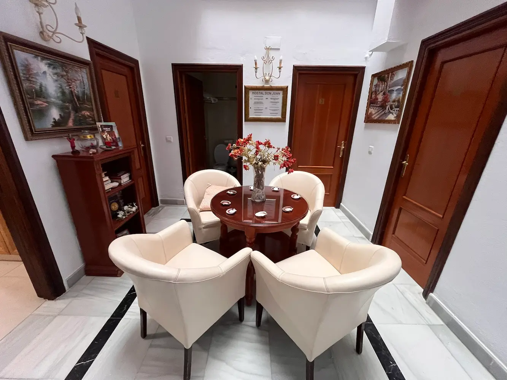
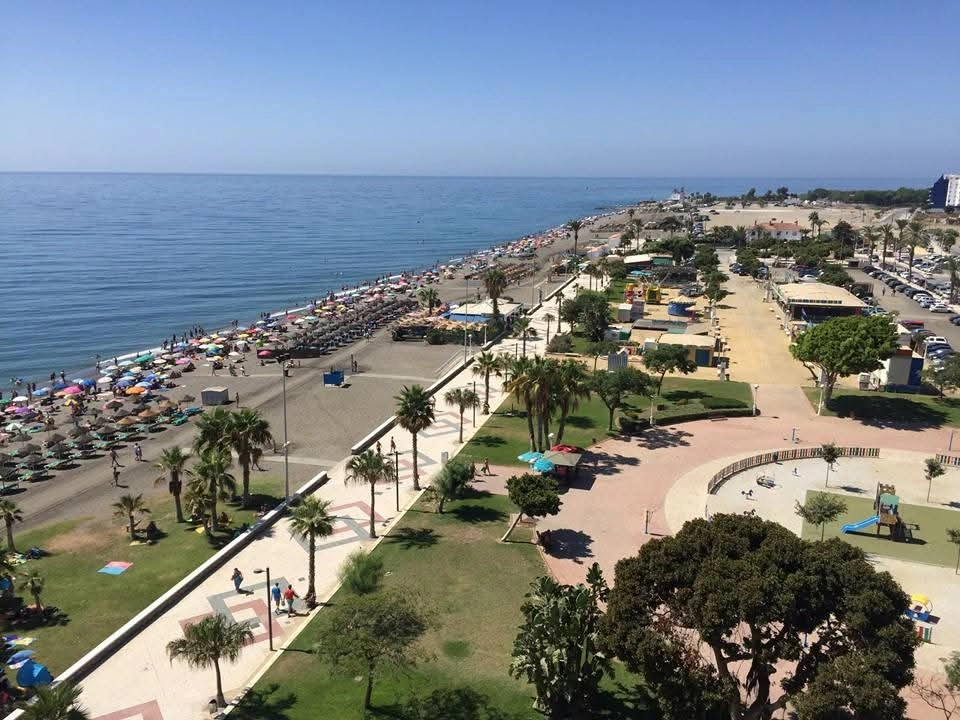
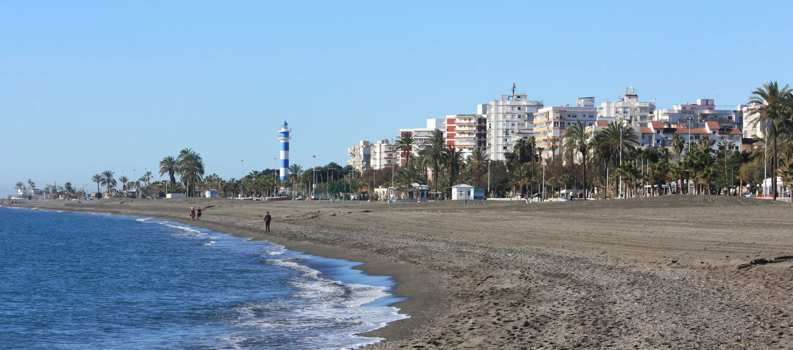
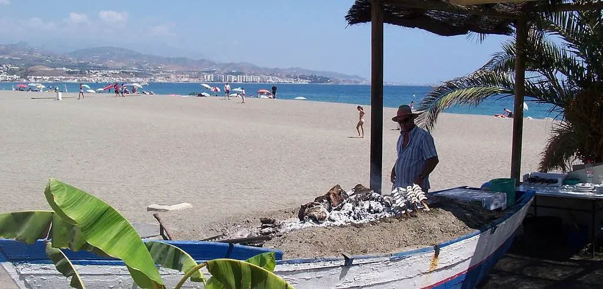

Nuestra Esencia
En Hostal Don Juan llevamos años ofreciendo alojamiento a viajeros que buscan la tranquilidad de Torre del Mar.
Nuestras instalaciones están pensadas para el descanso, con habitaciones totalmente equipadas y una ubicación privilegiada a pocos metros del mar y los principales servicios del pueblo.
Ver habitaciones





Ubicación privilegiada
Estamos situados en primera línea de playa, lo que nos permite ofrecerte la tranquilidad necesaria para descansar pero con la ventaja de tener el mar a solo unos pasos.
Es el lugar ideal para olvidarse del coche durante las vacaciones: tienes la playa al lado y estás a un paso de los mejores restaurantes y del ambiente del centro de Torre del Mar.
Ver ubicación


